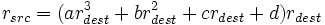
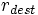
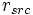
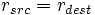
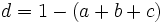

Lens correction model
Lens correction model
The panorama tools have a very flexible model to correct for typical geometrical lens errors. Even better, it can often even estimate the correction parameters directly from the images in a panorama.
There are a total of 6 parameters that have to do with lens correction.
- First of all there is the lens Field of View (FoV) - not exactly an error, but a parameter that determines the image perspective distortion.
- The actual lens correction parameters a, b and c which are used to correct for barrel distortion, pincushion distortion and even wavy distortion.
- The lens shift parameters d and e that correct for the lens optical axis[*] not being in the image center.
Two more parameters correct for image errors that are not induced by the lens but by a scanner or scanning camera for example. These are the shear parameters f and g.
Field of View
The Focal Length is a physical property of the lens. Together with the effective sensor or film size and the focusing distance it approximates the image Field of View (there are other factors that influence it). Caution: Cropping the image changes the Field of View. If you need to crop your source images for a panorama, crop them all to the same size!
The Field of View together with the lens projection (rectilinear, fisheye or cylindrical for swing lens cameras) determine the image perspective distortion. Perspective distortion is less with a smaller Field of View. See Helmut Dersch page [1] for details about different wide angle perspectives.
Lens distortion a, b & c parameters
For perfect rectilinear camera optics, all you would need to know is the field of view. Perfect results could be achieved by simply mapping pixels in the image to the tangent plane[*]. Real lenses deviate from this perfect tangent plane projection. The deviations push and pull fixed points in the scene away from where they would have fallen. Luckily, rather than arbitrary pushes and pulls, almost all deviations occur radially, towards or away from some common center, and luckily the deviation amount is almost the same at a given radius around that center. Hence a model that corrects for this deviation based on the radius gives pretty good results.
The lens distortion a, b and c parameters correspond to a third degree polynomial describing radial lens distortion:
- 
where  and  refer to the normalized radius of an image pixel. The center point of this radius is where the optical axis[*] hits the image - normally the image center. Normalized means here that the largest circle that completely fits into an image is said to have radius=1.0 . (In other words, radius=1.0 is half the smaller side of the image.) A perfect lens would have a=b=c=0.0 and d=1.0 which resolves into .
Sometimes the above formula is written as

which is essentially the same.
Usual values for a, b and c are below 1.0, in most cases below 0.01. Too high values suggest that you chose a wrong lens type, f.e. fisheye instead of rectilinear or vice versa. This refers to the absolute values of course since a, b and c can be positive or negative (f.e. both 4.5 and -4.5 are considered too high values).
The fourth parameter (d) is only available in the Correct, Radial Shift[*] filter of the Panorama Tools Plugins[*]. It is calculated implicitly by pano12 (used by PTOptimizer, PTStitcher and the GUIs) in order to keep the same image size:
- 
Hence it is not available in the different GUI front-ends[*] (you can see it in the PTOptimizer result script).
Unfortunately a different parameter also named d refers to image shift in PTStitcher and PTOptimizer scripts and the GUIs. This sometimes causes confusion. (See more discussion below.)
This polynomial approach is never exact, but can give a pretty good approximation to the real behaviour of a given lens. If you need better correction you must use a distortion matrix, as used by Distortion Remove (see link below).
Lens distortion and fisheyes
Unlike rectilinear lenses, fish-eye lenses do not follow the tangent-plane geometry, but instead have built-in distortions designed to achieve wide fields of view. The radial lens distortion parameters are used the same way for rectilinear lenses and fisheye lenses[*], but they should never be used to attempt to remap a fisheye to a rectilinear image. This is done by selecting the proper source and destination projection. Fisheye geometry follows a rapidly-changing trigonometric function which can hardly be approximated by a third degree polynomial.
For fisheyes, the lens correction parameters correct for the deviation between a real lens and the ideal fisheye geometry.
Lens or image shift d & e parameters
Sometimes a lens and image sensor might not be centered with respect to each other. In this case the optical axis[*] doesn't fall on the image center. This is particularly the case for scanned images where you never can say whether the film is centered on the scanner or not.
If the above lens correction algorithm is used on such images both lens correction and perspective correction work on the wrong center point. The lens shift parameters d (horizontal shift) and e (vertical shift) compensate for that problem. They contain values in pixel units which determine how far the center for radial correction is shifted outside the geometrical image center.
Image shear g & t parameters
Image shear is not a lens distortion but nevertheless is part of the panotools lens correction model. It corrects for a distortion induced by scanners or scanning cameras that causes a rectangular image being sheared to the form of a parallelogram (one side of the images is shifted parallel to the opposite side)
Determine lens correction
a, b, c and FoV are physical properties of a lens/camera-combination at a given focus distance. If you always shoot at the same focus setting, f.e. infinity or the hyperfocal distance, then you can safely reuse the parameters. At different focus settings, FoV will change noticeably, but usually it is fine to reuse a, b, and c even then.
There are a number of ways to determine the a, b, c and fov parameters to calibrate a particular lens/camera combination:
- Taking a single photograph of a subject containing straight lines, defining one or more sets of straight line control points (types t3, t4, etc.), and optimising for just a, b, c. You need to set the output format to Rectilinear Projection for this technique to work. This method is used by the author of PTLens[*]. The calibrate_lens[*] tool also uses this technique and can operate with Fisheye Projection images greater than 180°.
- Taking a single photograph of a rectangular or grid object, selecting lots of horizontal and vertical control points, then optimising roll, pitch, yaw, fov, a, b & c. You need to set the output format to Rectilinear Projection for this technique to work. The process is similar to this hugin architectural tutorial:
- Taking two or more overlapping photographs and selecting lots of normal control points, then optimising roll, pitch, yaw, fov, a, b & c. This technique works with any output projection format but requires parallax free images shot exactly from the Nodal Point. Note that to get a precise measure of the Field of View, you have to take a full 360 degree panorama.
- Using points that are known to be directly above each other such as edges of buildings, windows, reflections in ponds etc... This is the vertical control points method and works with Equirectangular Projection or Rectilinear Projection output and all lenses including those wider than 180°.
- Using a tool such as PTLens[*], lensfun[*] or fulla to read the photo EXIF metadata and correct the image automatically by looking up the lens in an existing database.
Optimize for lens correction
If you optimize for lens correction in order to calibrate your lens you should keep some facts in mind:
Since lens correction parameters are determined by evaluating the distortion at different radius values you should provide enough control points at a large range of radii from the image center.
- If you use a rectangular pattern or straight lines for that task, make sure you set control points in all distances from the center.
- If you use two or more images make sure you overlap regions with large potential distortion (f.e. the corners) with regions with low possible distortion (f.e. the center). An only horizontal overlap would do, but use at least 50% in order to overlap the image center of one image with the border of the other.
a, b and c parameters influence Field of View, especially for images in landscape orientation but slightly for portrait oriented ones, too. This is because although the implicit calculation of the fourth polynomial parameter tries to keep the image at the same size, this is only possible at the radius r_src = 1.0.
Outside this radius, especially in the image corners, the size and hence the Field of View might differ. Since they are interconnected in this way, you should always allow the optimization for FoV too, if you optimize for a, b and c with more than one image. (You cannot optimize for FoV with only one image). As noted above you need a full 360 degree panorama in order to get an accurate measure of the Field of View.
The a and c parameters control more complex forms of distortion. In most cases it will be enough to optimize for the b parameter only, which is good at correcting normal barrel distortion and pincushion distortion.
If you want to see how changing the parameters influences distortion correction go to http://4pi.org/downloads/ and get abc.xls. Don't deactivate macros on loading.
See also Helmut Dersch's barrel distortion page.
There's an excellent tutorial on how to optimize by John Houghton: [2]
Tools to correct barrel and pincushion distortion
- The original PTStitcher can be scripted to batch process images with known a, b & c parameters. It can also be operated with one of the GUI front-ends[*].
- nona or nona_gui (both part of the hugin distribution) can be used identically to PTStitcher.
- The Correct Radial Shift[*] filter in the Panorama Tools Plugins[*] for the gimp[*] or photoshop[*] uses the same a, b & c parameters as PTStitcher. Note that it doesn't know about d & e shift parameters and uses 'd' as an overall scaling factor instead, which should be d = 1-(a+b+c) to keep the image roughly the same size. If you need to shift the correction center like with the d & e parameter you must combine it with Vertical Shift[*] and/or Horizontal Shift[*].
- PTLens[*] is a Photoshop[*] plugin and a stand-alone Windows tool that uses the same a, b & c parameters and comes with a database of popular lenses.
- fulla is a command-line tool that uses the same a, b, c & d parameters to correct barrel distortion. It can also correct chromatic aberration and vignetting at the same time.
- PTShift[*] determines different a, b & c parameters for the three color channels in order to correct for Chromatic aberration with the Correct Radial Shift[*] filter.
- Gimp wideangle plugin[*] uses a different formula altogether to correct distortion.
- Gimp phfluuh plugin[*] is another tool that corrects lens distortion using yet another formula.
- CamChecker[*] is a tool for automatically determining lens distortion and generates a different set of parameters from everything else.
- zhang_undistort[*] is a tool distributed with hugin that uses CamChecker[*] parameters to actually correct distortion.
- Distortion Remove[*] uses a completely different approach with a distortion matrix. Page in german only: http://www.stoske.de/digicam/Artikel/verzeichnung.html